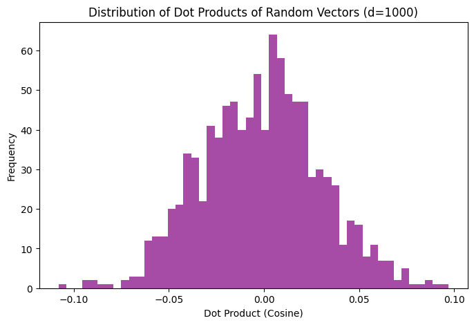
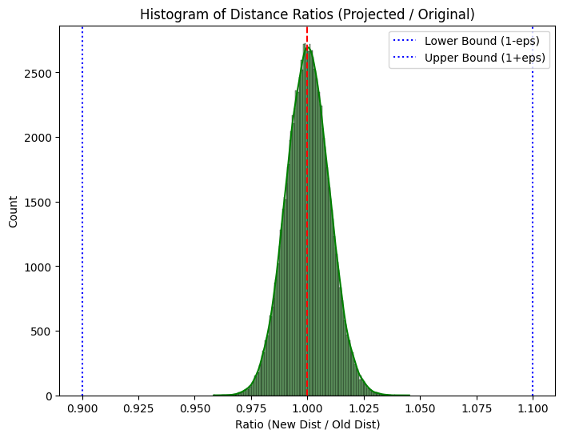
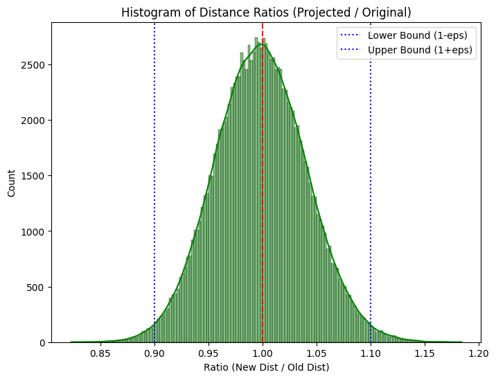

Random Projection: Theory and Implementation#
Mahmood Amintoosi, Fall 2025 Computer Science Dept, Ferdowsi University of Mashhad
1. Introduction: Why Random Projection?#
In the previous section, we explored the weird properties of high-dimensional spaces. We learned that as dimensions increase, data becomes sparse, and distance-based methods (like k-NN) struggle. This is the Curse of Dimensionality.
To solve this, we often use Dimensionality Reduction. The most famous method is PCA (Principal Component Analysis), which finds the “best” axes to preserve variance. However, PCA has a major drawback:
It is computationally expensive: Calculating the covariance matrix and its eigenvectors takes a long time for very large datasets (\(O(d^2 n)\) or \(O(d^3)\)).
Random Projection (RP) offers a surprising alternative: Instead of finding the “best” axes, we simply project the data onto random axes!
It is incredibly fast.
It is data-independent (you don’t need to see the data to build the projection matrix).
It preserves distances remarkably well.
2. Foundation: Orthogonality in High Dimensions#
Recap from High-Dimensional Geometry:
Why does projecting onto random vectors work? The answer lies in the geometry of high-dimensional spaces. As we saw in Foundations of Data Science (Blum et al.), if we generate random vectors from a Gaussian distribution in high dimensions (\(d \to \infty\)), they have a unique property:
“Random vectors in high dimensions are nearly orthogonal to each other.”
If you pick \(k\) random vectors \(r_1, r_2, \dots, r_k\) in a high-dimensional space, they effectively form a new, nearly orthogonal coordinate system. Projecting data onto these vectors is like taking a “snapshot” of the data from \(k\) different random angles.
import numpy as np
import matplotlib.pyplot as plt
# Demonstration: Dot product of random vectors (Orthogonality check)
d = 1000 # High dimension
n_vectors = 1000
# Generate random vectors (Standard Normal)
R = np.random.randn(n_vectors, d)
# Normalize them to unit length
R_normalized = R / np.linalg.norm(R, axis=1, keepdims=True)
# Compute dot products between the first vector and all others
# Since they are unit vectors, dot product = cosine similarity
dot_products = R_normalized[0] @ R_normalized[1:].T
plt.figure(figsize=(8, 5))
plt.hist(dot_products, bins=50, color='purple', alpha=0.7)
plt.title(f"Distribution of Dot Products of Random Vectors (d={d})")
plt.xlabel("Dot Product (Cosine)")
plt.ylabel("Frequency")
plt.show()

Observation: The dot products cluster tightly around 0. This confirms that random directions are perpendicular (orthogonal) to each other.
3. The Theory: Johnson-Lindenstrauss Lemma#
The core theoretical justification for Random Projection is the Johnson-Lindenstrauss (JL) Lemma.
It states, simply:
Points in a high-dimensional space can be mapped into a lower-dimensional space of dimension \(k\) such that the pairwise distances between the points are nearly preserved.
Mathematically, for any two data points \(x\) and \(y\):
Where:
\(f(\cdot)\) is the projection function.
\(\epsilon\) is the tolerance for distortion (error).
Key Insight: The required lower dimension \(k\) does not depend on the original dimension \(d\). It only depends on the number of samples \(n\) and the error \(\epsilon\):
This means we can reduce a 1,000,000-dimensional text dataset to a few hundred dimensions just as easily as a 10,000-dimensional one, provided the number of samples \(n\) is the same.
4. Types of Random Matrices#
In practice, we project data \(X\) (shape \(n \times d\)) into a lower dimension \(k\) using a random matrix \(R\) (shape \(d \times k\)):
(The scaling factor \(1/\sqrt{k}\) is to maintain the expected length of vectors).
There are two main ways to generate \(R\):
A. Gaussian Random Projection#
The elements of the matrix \(R\) are drawn from a Normal distribution \(N(0, 1)\). This is the classic approach directly following the JL Lemma.
B. Sparse Random Projection (Achlioptas)#
Generating a huge matrix of float numbers is slow. Dimitris Achlioptas showed that we can use a much simpler, sparse matrix. The elements \(r_{ij}\) are drawn from:
Usually, \(s=3\). This means the matrix is mostly zeros (\(\approx 66\%\)), with some \(+1\) and \(-1\).
Benefit: Much faster matrix multiplication and less memory usage.
5. Implementation in Python with Scikit-Learn#
Scikit-Learn provides GaussianRandomProjection and SparseRandomProjection.
Let’s verify the JL Lemma: we will reduce a dataset and check if distances are preserved.
from sklearn.random_projection import GaussianRandomProjection, SparseRandomProjection, johnson_lindenstrauss_min_dim
from sklearn.metrics.pairwise import euclidean_distances
import seaborn as sns
# 1. Determine necessary components for a given error
n_samples = 500
epsilon = 0.1 # Allow 10% distortion
min_dim = johnson_lindenstrauss_min_dim(n_samples=n_samples, eps=epsilon)
print(f"To preserve pairwise distances of {n_samples} samples with {epsilon*100}% max error,")
print(f"we need at least {min_dim} dimensions.")
# 2. Generate synthetic high-dimensional data
d_original = 50000
X = np.random.rand(n_samples, d_original)
# 3. Apply Random Projection
# We project from 50000 dimensions down to 'min_dim'
transformer = SparseRandomProjection(n_components=min_dim, random_state=42)
X_new = transformer.fit_transform(X)
print(f"Original shape: {X.shape}")
print(f"Projected shape: {X_new.shape}")
# 4. Verify Distance Preservation
# Compute pairwise distances in original space
dist_original = euclidean_distances(X)
# Extract upper triangle (unique pairs), excluding diagonal
original_dists = dist_original[np.triu_indices(n_samples, k=1)]
# Compute pairwise distances in projected space
dist_new = euclidean_distances(X_new)
new_dists = dist_new[np.triu_indices(n_samples, k=1)]
# Calculate the ratio of new distances to old distances
ratios = new_dists / original_dists
# Plotting
plt.figure(figsize=(8, 6))
sns.histplot(ratios, kde=True, color='green')
plt.axvline(1.0, color='red', linestyle='--')
plt.axvline(1 - epsilon, color='blue', linestyle=':', label='Lower Bound (1-eps)')
plt.axvline(1 + epsilon, color='blue', linestyle=':', label='Upper Bound (1+eps)')
plt.title("Histogram of Distance Ratios (Projected / Original)")
plt.xlabel("Ratio (New Dist / Old Dist)")
plt.legend()
plt.show()
To preserve pairwise distances of 500 samples with 10.0% max error,
we need at least 5326 dimensions.
Original shape: (500, 50000)
Projected shape: (500, 5326)

If we project from 50000 dimensions down to lower than ‘min_dim’ …
# If we project from 50000 dimensions down to lower than 'min_dim'
transformer = SparseRandomProjection(n_components=300, random_state=42)
X_new = transformer.fit_transform(X)
print(f"Original shape: {X.shape}")
print(f"Projected shape: {X_new.shape}")
# 4. Verify Distance Preservation
# Compute pairwise distances in original space
dist_original = euclidean_distances(X)
# Extract upper triangle (unique pairs), excluding diagonal
original_dists = dist_original[np.triu_indices(n_samples, k=1)]
# Compute pairwise distances in projected space
dist_new = euclidean_distances(X_new)
new_dists = dist_new[np.triu_indices(n_samples, k=1)]
# Calculate the ratio of new distances to old distances
ratios = new_dists / original_dists
# Plotting
plt.figure(figsize=(8, 6))
sns.histplot(ratios, kde=True, color='green')
plt.axvline(1.0, color='red', linestyle='--')
plt.axvline(1 - epsilon, color='blue', linestyle=':', label='Lower Bound (1-eps)')
plt.axvline(1 + epsilon, color='blue', linestyle=':', label='Upper Bound (1+eps)')
plt.title("Histogram of Distance Ratios (Projected / Original)")
plt.xlabel("Ratio (New Dist / Old Dist)")
plt.legend()
plt.show()
Original shape: (500, 50000)
Projected shape: (500, 300)

Interpretation of the Plot#
If the JL Lemma holds, the histogram of ratios should cluster tightly around 1.0.
Most pairs should have a ratio between \(0.9\) and \(1.1\) (for \(\epsilon=0.1\)).
This confirms that although we threw away thousands of dimensions, the relative geometry of the data points remains intact.
When to use Random Projection?#
When the number of features is very large (e.g., text data, genomic data, images).
When PCA is too slow to compute.
As a preprocessing step before clustering (K-Means) or classification in high-dim space.
References#
Blum, A., Hopcroft, J., & Kannan, R. (2020). Foundations of Data Science. Cambridge University Press. (Chapter 2).
Scikit-Learn Documentation: Random Projection.
Achlioptas, D. (2003). Database-friendly random projections: Johnson-Lindenstrauss with binary coins.
Saeed, Mehreen. Random Projection: Theory and Implementation in Python with Scikit-Learn